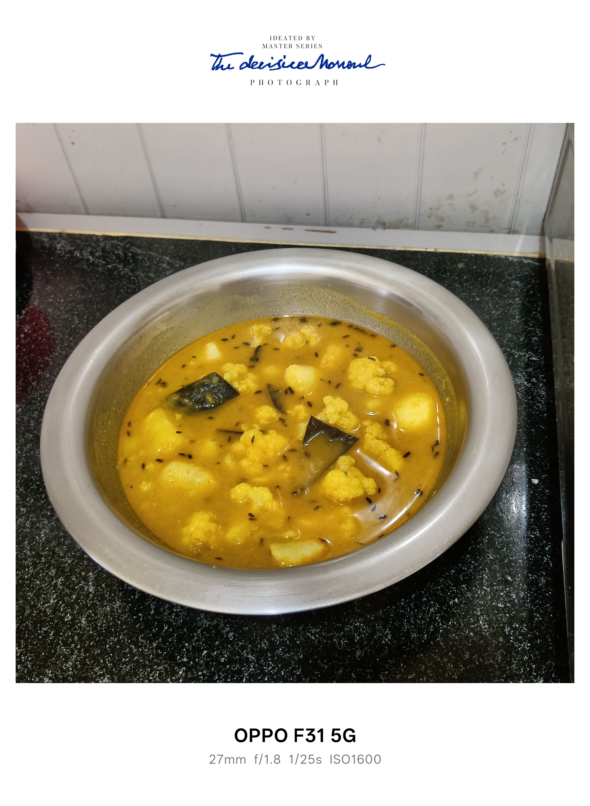
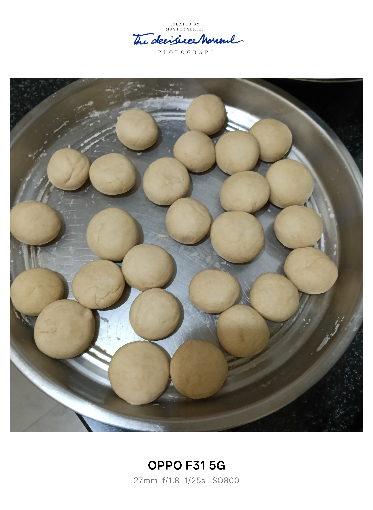
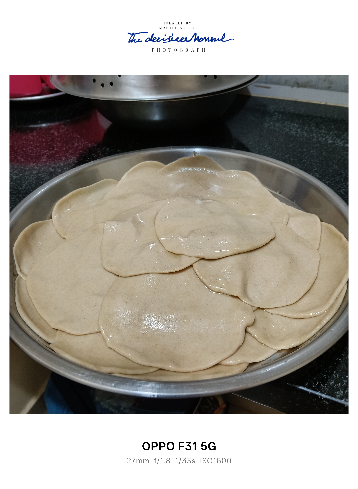

SPICELO STORY
Aloo Gobhi Ki Sabzi with Homemade Puri
Learn how to prepare homemade Aloo Gobhi Ki Sabzi with fresh whole wheat puri. This comforting Indian meal serves two people and brings together simple ingredients and a familiar taste of home.

The Story Behind This Dish
I learned to make this kind of homemade food from my mother when I visited my village after duty. She used to prepare meals like this at home, and the taste became a special memory for me.
Now I live in Bangalore. Whenever I miss homemade village food, I prepare Aloo Gobhi Ki Sabzi with puri myself. I especially enjoy this meal in the morning.
Not separately specified
60 min
Easy
Ingredients for Aloo Gobhi and Homemade Puri
- 2 medium potatoes
- 500 g cauliflower
- 2 spoons cooking oil
- 3 spoons ginger-garlic paste
- 1/2 spoon turmeric powder
- 1 spoon red chilli powder
- Salt to taste
- 1 glass water
- 1/2 spoon cumin seeds for finishing tadka
- Bay leaf for finishing tadka
- 500 g whole wheat flour
- 250 g sunflower oil for frying
- 1 spoon sugar
- Hot water as needed for kneading dough
Preparing the Homemade Puri


Aloo Gobhi and Puri Cooking Video
How to Make Aloo Gobhi Ki Sabzi
- Prepare the potatoes and cauliflower for cooking.
- Heat 2 spoons of cooking oil in a kadai.
- Add the potatoes and cauliflower to the kadai.
- Add ginger-garlic paste, turmeric powder, red chilli powder and salt.
- Add 1 glass of water and cook the sabzi for approximately 30 minutes.
- After the sabzi is cooked, prepare a separate finishing tadka with 1/2 spoon cumin seeds and bay leaf. Add this tadka to the sabzi.
How to Make Homemade Puri
- Take 500 g of whole wheat flour in a bowl.
- Add 1 spoon of sugar to the flour and mix.
- Add hot water as needed and knead the flour into a dough.
- Divide the dough into portions and roll each portion into a round puri.
- Heat sunflower oil in a kadai.
- Fry the puris one at a time in the hot oil.
- Prepare the puris for approximately 30 minutes.
- Serve the homemade puris with the Aloo Gobhi Ki Sabzi.
Total cooking time: approximately 60 minutes.
My Food Note
This meal reminds me of the food my mother used to prepare in our village. Even while living in Bangalore, making it in my own kitchen brings back that familiar feeling of home.
Comments